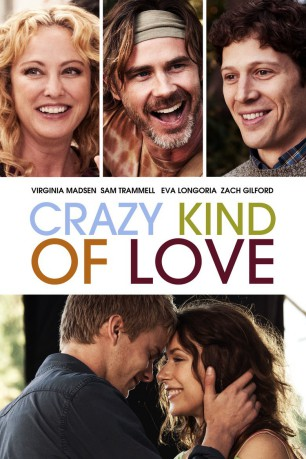

#1485 Crazy Kind of Love
 
 IMDB-Wertung: 5.9 / 10
IMDB-Wertung: 5.9 / 10  Metascore: 0
Metascore: 0 
Als ihr Mann Gordie sie für eine jüngere Frau verlässt, bricht für Augusta eine Welt zusammen. Nur ihre zwei Söhne, Henry und Matthew, machen ihr Leben noch lebenswert. Doch selbst die schaffen es nicht, ihre Mutter richtig aufzumuntern und die Familie droht zu zerbrechen. Eines Tages steht die neue Nachbarin Bette vor der Tür. Henry verliebt sich sofort in die lebensfrohe Teenagerin, die nicht nur ihm gefällt, sondern auch wieder neuen Schwung in das zerbrochene Familienleben zu bringen scheint. Mit ihrer natürlichen und gutgelaunten Art sorgt sie dafür, dass Augustas dunkle Wolken verschwinden und frischer Wind in ihr Leben zurückkehrt…
Jahr: 2013
Dauer: 100 Minuten
FSK: 6
Land: USA Studio: Phase 4 FilmsTonspuren: DTS - ,
Untertitel:
Auflösung: 1080p (1920x800) Größe: 4802 MB
Genre: Komödie, Drama, Liebe
Regisseur: Sarah Siegel-Magness
Drehbuch: Karen McCullah, April Stevens, Karen McCullah
Soundtrack: Mario Grigorov
Darsteller:
 Virginia Madsen als Augusta Iris
Virginia Madsen als Augusta Iris- Graham Rogers als Henry Iris
 Amanda Crew als Bette
Amanda Crew als Bette Zach Gilford als Matthew Iris
Zach Gilford als Matthew Iris Sam Trammell als Jeff
Sam Trammell als Jeff- Madeline Zima als Annie
 Kristoffer Ryan Winters als David
Kristoffer Ryan Winters als David Anthony LaPaglia als Gordie Iris
Anthony LaPaglia als Gordie Iris- Aly Michalka als Janeen
 Lin Shaye als Denise Mack
Lin Shaye als Denise Mack Kathleen Wilhoite als Doris
Kathleen Wilhoite als Doris Eva Longoria als Marion
Eva Longoria als Marion- Bobbi Sue Luther als Bartender
- Christopher Atkins als Mr. Jeffries
- Camryn als Ruby
- Jillana Laufer als Whispering Woman #2
- Ty Dawson als Young Henry , uncredited
- Pat Fitz als 4th of July Onlooker , uncredited
- Kiki McCleary als Neighbor , uncredited
- Eric McIntire als Joey , uncredited
- Stacey Oristano als Jenny , uncredited
- Mike Jerome Putnam als League Bowling Captain , uncredited
- Zachary Blair Spilkoman als Beer Pong Player , uncredited
- Mia Katherine Manoukian als Cute Kid
- Angela Jones als Whispering Woman #1
- Leslie Gunning als Grocery Store Customer , uncredited
Datei: X:\2013(A-F)\Crazy Kind of Love (2013, FSK6, 1920x800).mkv seit 10.07.2015
Festplatte: HD 2012(N-Z)-2013(A-H)
 Es gibt insgesamt 127 Filme in der Gruppe '2013(A-F)'
Es gibt insgesamt 127 Filme in der Gruppe '2013(A-F)'